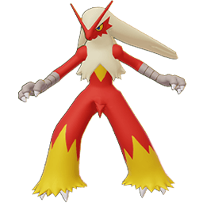
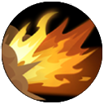
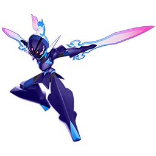
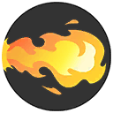

Blaziken
Blaziken es un de los mejores en su rol por el mismo nombre de este equilibrado, ya que este cumplir diferentes tipos de propositos en una partida,
Brawlear, Cazar, Stunnear, Asegurar, etc.
Talvez no se el maestro en ellos pero garcias esto el tiene una gran versatilidad.
A continuacion se vera sus movimientos:.

PUÑO FUEGO: Desata 2 puñetazos llameantes en la dirección designada, infligiendo daño a los enemigos alcanzados. La dirección designada se puede cambiar durante este movimiento. Cuando el usuario golpea a un enemigo con este movimiento, por un corto tiempo, este movimiento se puede usar una vez más.

PATADA IGNEA: Salta hacia atrás y luego patea mientras saltas hacia una ubicación designada, volviéndote Imparable durante la animación de salto y patada. Inflige daño a los enemigos alcanzados por la patada y empújalos. Los enemigos empujados tendrán su velocidad de movimiento disminuida en un 25% durante 2 segundos. Si los enemigos empujados entran en contacto con una pared, serán aturdidos en su lugar durante 1 segundo. Patada de Fuego no puede atravesar paredes.

ONDA CERTERA: Dispara una bola de energía concentrada en la dirección designada. La bola de energía concentrada explota al golpear a un enemigo o después de viajar una distancia determinada, infligiendo daño a los enemigos en el área de efecto de la explosión y disminuyendo su velocidad de movimiento en un 35% durante 1,5 segundos.
SOFOCO: Conviértete en imparable, reduce el daño entrante en un 25% y carga poder en su lugar en una dirección designada. Si se usa de nuevo, desata una patada llameante en la dirección diseñada, infligiendo daño a los enemigos alcanzados. Cuanto más tiempo se mantenga la carga, más daño inflige este movimiento. Si el usuario carga una cierta cantidad de poder (cuando el indicador llega a la línea indicadora), este movimiento también empuja a los enemigos alcanzados.
Ceruledge
A diferencia del Pokemon anterior este se enfoca puramente en daño, quemar oponentes, cazarlos y hacerles malgastar sus movimientos,
pero esto a cambio de que sea bien fragil.
A continuacion se vera sus movimientos

PSICOCORTE: Ceruledge lanza una hoja formada por poder psíquico en la dirección designada, infligiendo daño y aplicando un efecto de ralentización a los enemigos alcanzados. Los enemigos alcanzados por este movimiento tienen su Defensa disminuida durante 4 segundos. Si Ceruledge golpea a los enemigos con un ataque básico, el tiempo de reutilización de este movimiento se reduce en 0,5 segundos.

GOLPE FANTASMA: Corre y desaparece en la oscuridad, donde Ceruledge se esconde durante 1s. Mientras se esconde, Ceruledge no puede moverse. Cuando este movimiento se usa de nuevo o después de que hayan pasado 1s, el usuario aparece en la dirección designada mientras se corta a sí mismo, infligiendo daño que ignora la Defensa y los escudos de los enemigos y les aplica una ralentización del 60%. Si este movimiento golpea a un enemigo, el tiempo de reutilización de este movimiento se reduce en un 40% del tiempo de reutilización máximo.

NITROCARGA: Ceruledge se envuelve en llamas y carga en la dirección designada, infligiendo daño a los enemigos alcanzados. La velocidad de ataque básica de Ceruledge aumenta un 30% durante 3 segundos después de usar este movimiento. Se pueden guardar un máximo de 2 usos en reserva para este movimiento.

ESPADA LAMENTO: Ceruledge concentra los sentimientos amargos hacia el mundo de los vivos en un ataque cortante. El usuario recupera PS equivalentes al 40% del daño infligido con este movimiento. El daño infligido a los Pokémon salvajes solo cura la mitad de la cantidad normal. Cualquier PS recuperado que exceda los PS máximos del usuario se convierte en un escudo.
Charizard

Ahora con de los Pokemon mas famosos despues de Pikachu tenemos a Charizard, que sus ventajas son las de poder pelear a mayor distancia ademas de poseer una gran velocidad, su mayor "desventaja" seria que tiene daño bruto sino que continuo. A continuacion veremos sus movimientos.
.png)
PUÑO FUEGO: Charizard golpea hacia adelante, dañando y empujando a los enemigos en su camino. El primer enemigo golpeado es quemado. La quemadura dura 4 segundos y reduce el Ataque del enemigo en un 5%.
LANZALLAMAS: Ataca con una ráfaga de fuego mientras se mueve, dañando y quemando a los enemigos en línea. Charizard gana un pequeño bono de velocidad de movimiento del 40% durante 4 segundos si golpea. La quemadura dura 4 segundos y reduce el Ataque enemigo en un 5%.

LLAMARADA: Charizard dispara una ráfaga de fuego hacia adelante mientras se mueve, explotando al primer enemigo golpeado o después de una corta distancia, dañando a los enemigos y dejando un área de fuego durante 5 segundos que inflige daño con el tiempo cada 0.5 segundos y ralentiza a los enemigos dentro del radio un 30% durante 1 segundo (refrescándose en cada tic de daño).

ENVITE IGNEO: Charizard carga hacia adelante, protegiéndose durante 5 segundos, lanzando al enemigo objetivo y causando daño en un área.